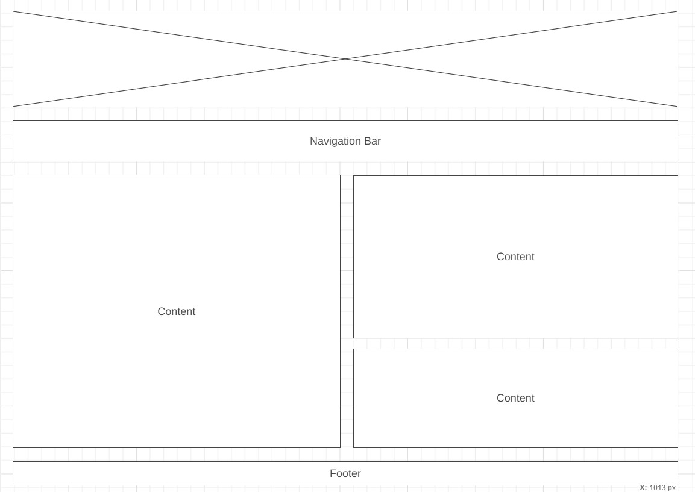
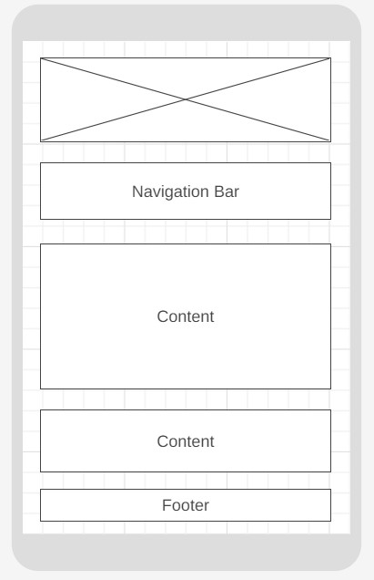

Site Plan
Site Name
Baguio Chamber of Commerce. The name "Baguio Chamber of Commerce" was selected to clearly represent the city of Baguio, emphasizing its local identity. Including the word "Chamber" in the site name is a common convention for chambers of commerce websites, signifying its role as a business-oriented organization. The choice of "Baguio" in the name ensures a strong connection to the city where the chamber operates, fostering a sense of community and local engagement.
Site Purpose
1. Promoting Business and Economic Development: The Baguio Chamber of Commerce website aims to
serve
as a platform for promoting local businesses and economic development. It will provide information on
the
city's
business environment, highlight success stories, and offer resources to support the growth of businesses
in
Baguio.
2. Community Engagement and Networking: The website will facilitate community engagement by
promoting networking events, workshops, and seminars. It will serve as a hub for businesses to connect,
collaborate,
and foster meaningful relationships. Additionally, the site will provide a directory of chamber members,
encouraging local businesses to support each other.
Scenarios
- What events will the Baguio Chamber of Commerce be holding this month that promote business-to-business networking?
- Where can I find contact information for the Baguio Chamber of Commerce's board of directors?
- What has been the population growth in the Baguio area?
Color Schema
- #0F0A0A
- #F5EFED
- #2292A4
- #BDBF09
- #D96C06
Typography
- H1: Berkshire Swash
- H2: Monserrat Bold
- H3: Montserrat Semi-Bold
- Body: Monserrat Regular
Wireframe
Large View
Phone View
